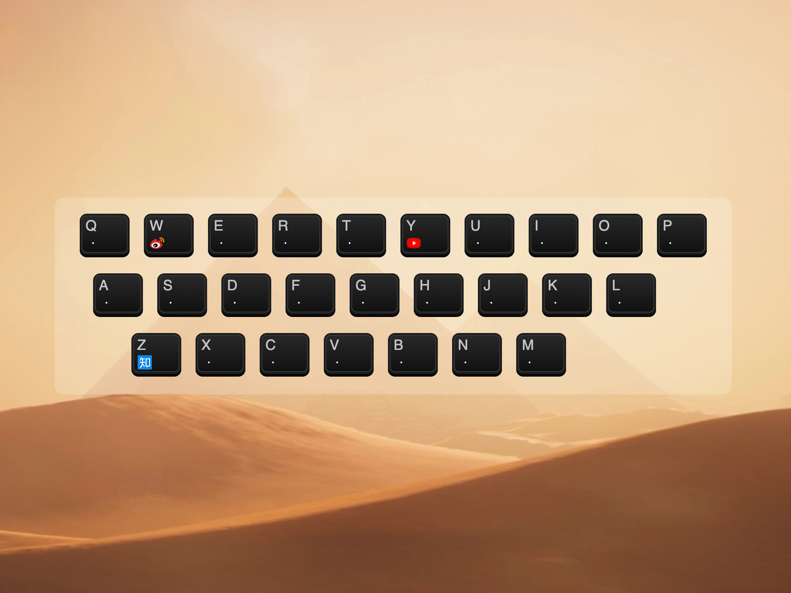
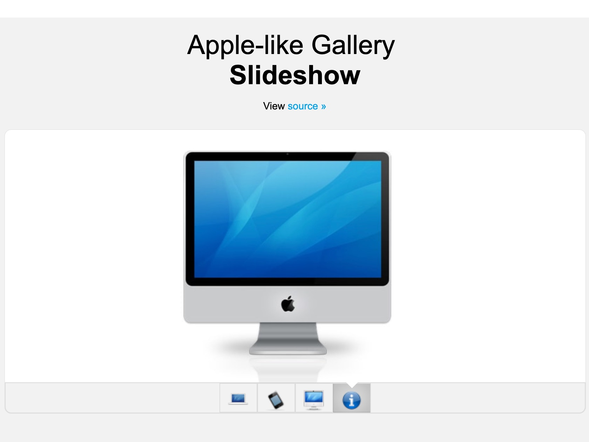

RS
card
关于
技能
作品
作品1
作品2
作品3
博客
博客1
博客2
博客3
日历
联系方式
其他
Hello
马娟
前端开发工程师
年龄
18
所在城市
上海
邮箱
858123145@qq.com
手机
15201984870
下载PDF简历
马娟，资深前端工程师。
技能：前端开发，Rails开发，Node.js开发。
技能
HTML 5 & CSS 3
JavaScript
jquery
Vue
React
HTTP
作品集
 